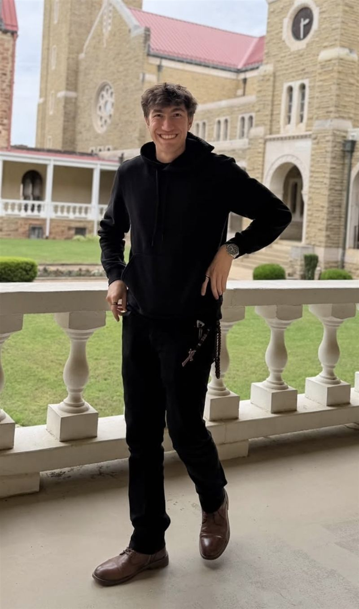
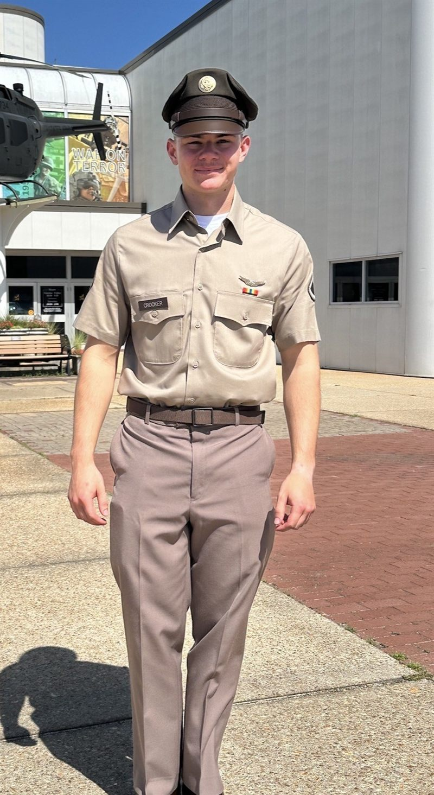

The people behind the coin.
Ten students and one professor with a shared conviction: Arkansas shouldn't watch the future of money from the bleachers. Here's who they are and what they're building.

Lucas Vilar.
Born in Brazil and fluent in Portuguese, English, and Spanish, Lucas came up through Nashville, Arkansas as a robotics team president, a regional chess champion, and a statewide Academic All-Star, then carried a 4.0 into the Walton College with his eyes on becoming a global entrepreneur.
That's the exact skill set the presidency runs on: systems thinking, competitive patience, and the nerve to build something new. He took Crypto Hogs from a group chat to 150+ members and put Fayetteville on PizzaDAO's global Bitcoin Pizza Day map.
Reese Crawford.
Reese studies Information Systems with an Emerging Technologies concentration at the Walton College, carries a 4.0 and a Chancellor's List nod, and already works inside the industry: research fellow at GOSH AI and SOLV Protocol, business development and research at Red Beard Ventures.
That network is why the club gets real speakers and real partners. As co-founder and Vice President he turned industry contacts into the club's first protocol relationships, including a Sui Foundation grant.

Paxton Crocker.
A Little Rock native and Walton College student, Paxton founded Black Barrel Intel, an independent research platform covering energy markets, commodity flows, and geopolitical risk, with stops at Startup Junkie and the McMillon Innovation Studio's Sam's Club team along the way.
Reading markets for a living is treasurer training you can't buy. He runs the club's budgets, funding applications, and books with an analyst's discipline, and the money behaves.
Brixton Blasi.
Finance major at the Walton College and co-founder and Head of Growth at Swaply, the student-built campus marketplace, where his ambassador and creator programs took the app past 200 verified students. Former Texas 6A varsity goalkeeper, on record calling startup building "more valuable than any class."
Growth is a strategy job, and he's already done it once. Brixton runs the same playbook here: where the club goes next, how it gets there, and what it should say no to along the way.
Jackson Varela.
Little Rock raised, class of 2028, and already inside the Northwest Arkansas startup machine as a Walton Venture Intern, with venture case-competition reps through Cortado Ventures and FortySix VC on top.
Venture work is deadlines, diligence, and follow-through, which is the accountability job in one line. Jackson keeps every commitment the club makes visible and on schedule, and he built and runs this website, spinning coin included.
Aubree Upchurch.
A Tri Delta at Arkansas, Aubree learned brand-building in the most competitive social arena on campus: consistent voice, social-first instincts, and the discipline to show up every single day.
As Director of Marketing she owns the club's public face, from the feed to the flyers to the look of every event. If you saw the coin before you ever walked into a meeting, that was her doing.
Callie Conrade.
Business student on a pre-law track and a Tri Delta whose chapter work includes St. Jude fundraising. Callie already does marketing in the wild as brand ambassador and social media manager for Mister Sparky Electric of Little Rock.
Running a real company's social presence is exactly the reps a club account needs. She brings the polish: campaigns, copy, and the details everyone else forgets.
Kaylee Houston.
Honors Advertising and PR student and a Tri Delta, with marketing internships already stacked: Fifty Six this spring across social, content, and campaign analytics, and BigTuna Interactive this summer on digital marketing and conversion optimization.
Agency reps translate straight to the club: sharper campaigns, cleaner content, and numbers behind both. She makes Crypto Hogs look as good as the meetings feel.
Jackson Templeton.
Templeton is the club's connector, the officer most likely to already know somebody in whatever org, dorm, or group chat Crypto Hogs needs to reach next.
Outreach runs on exactly that: new members, partner organizations, and anyone curious enough to ask what a Crypto Hog actually is. If you've heard of us, there's a decent chance it started with him.
Thomas Cheek.
Thomas came to the Walton College from the Oklahoma City area to study accounting and finance, and started early: a licensed real estate agent with an OKC brokerage and development internship experience running financial analysis on multi-project deals.
Real estate is talking to strangers until they trust you, which is the outreach job exactly. He works the club's external pipeline, sponsors included, and brings the handshake.
Dr. Daniel Conway.
When the United States decides what blockchain standards should be, Dr. Conway is in the chair. He leads INCITS/Blockchain, the U.S. committee to ISO's global standards body, co-chairs technical standards for the Global Blockchain Business Council, and serves as blockchain standards chief at KoreInside, on top of being Teaching Professor of Information Systems at the Walton College and Associate Director of its Blockchain Center of Excellence. Before Arkansas: a Ph.D. from Indiana, faculty posts from Notre Dame to Northwestern, Cisco Systems' first professor in residence, and a running crypto policy column in RealClearMarkets.
For the club, that means office hours with someone who helps write the rules this industry will follow. "Blockchains do not eliminate trust, they reallocate it." That's his line, and this room is where he hands it down.